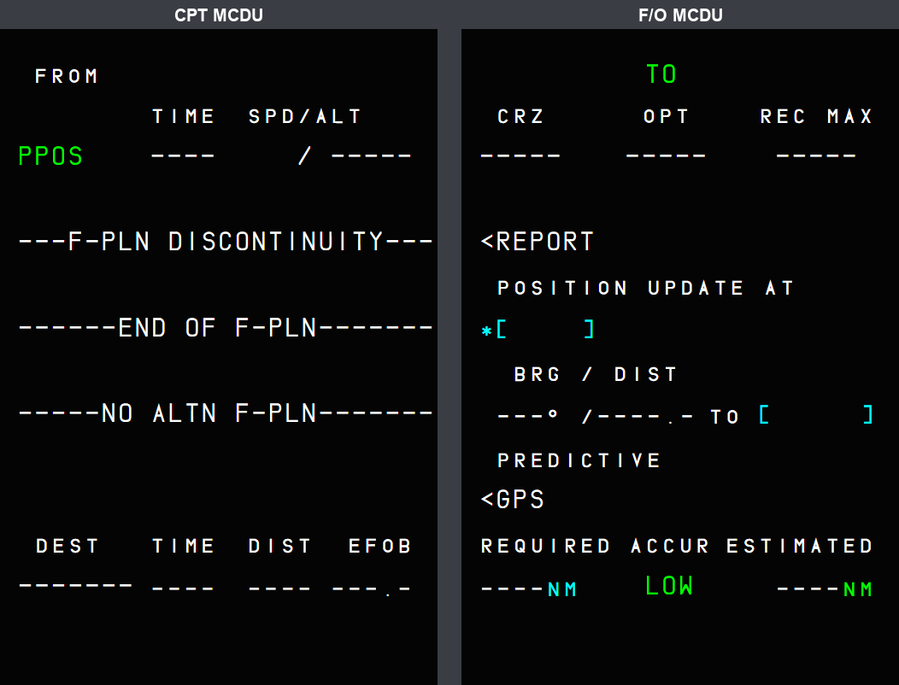
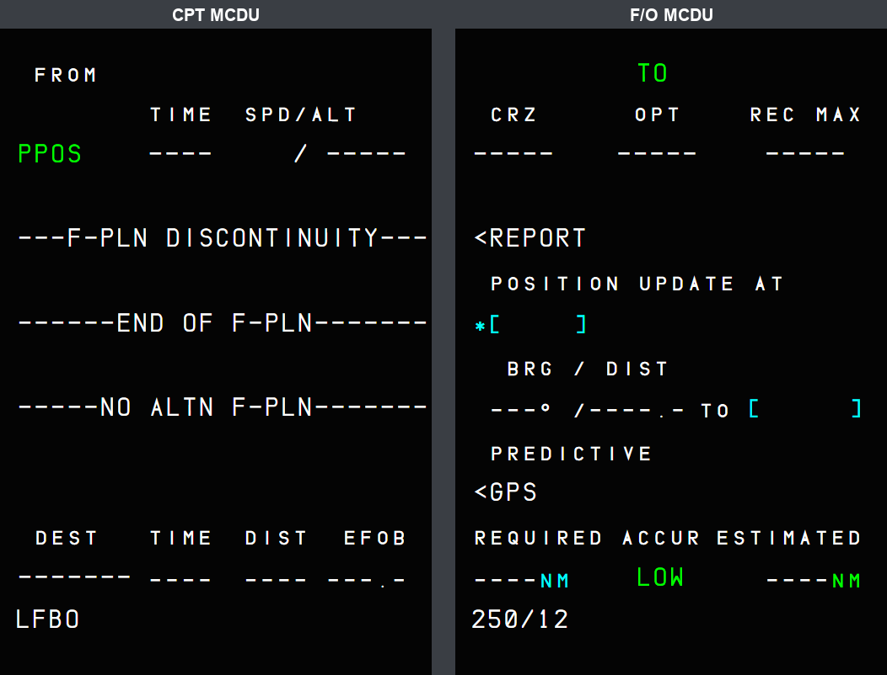
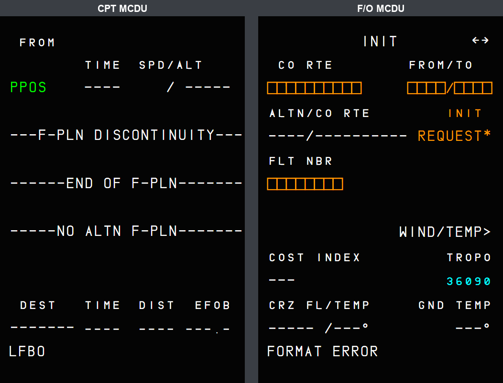
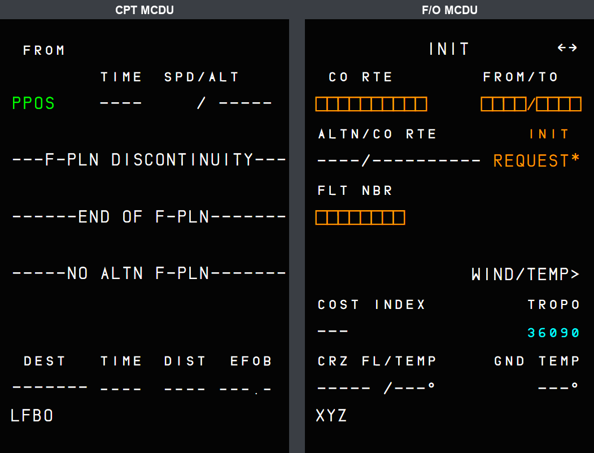

The two MCDUs mirrored each other: same page, same scratchpad. On the aircraft each MCDU is its own display, working on the shared FMGC data (A320 FCOM DSC-22_10-10). Now each pilot can work on a different page.

| Per MCDU | Shared (one FMS) |
|---|---|
| The page shown, the line keys | The flight plans, performance, fuel, navigation data |
| The scratchpad and what is typed in it | The data entered from either MCDU |
| The scratchpad messages (FORMAT ERROR, NOT ALLOWED ...) of an entry | FMGC messages (queued on both) |
| The keyboard entry (the MCDU that was clicked) | The EFIS symbols, the guidance |



| Situation | What you should see |
|---|---|
| An entry is rejected | The message shows on the MCDU where the entry was made. |
| An FMGC message (e.g. CHECK TAKE OFF DATA) | Queued on both MCDUs; CLR on one clears it there only. |
| The FMS changes pages by itself (flight phase change on PROG / PERF / IDENT, engine-out page, INIT B to FUEL PRED) | Applies to both MCDUs. |
| ATSU system status (not the answer to an entry) | On the ATSU scratchpad of both MCDUs. |
| Typing with the PC keyboard | Goes to the MCDU that was clicked last; only that MCDU animates its keys. |
| SimBridge remote MCDU | CPT screen on its left side, F/O screen on its right side. |
| Limitation | Why | What to do |
|---|---|---|
| No return to the MENU page after a power loss. | Same as the CPT MCDU before this change. | - |
| Close-up cockpit model: both screens show the whole texture until the companion change is merged. | The 4 UV values of the high-detail model (LOD00) live in the aircraft-large-files repository; this PR only changes LOD01. | Merge the aircraft-large-files PR first. |